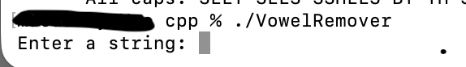

Vowel Remover
Course: CSCI 235
Language(s): C++
GitHub Repository: Private Repository
Project Description
This project is a C++ program that removes all the vowels from the string entered by the user and converts the remaining characters to uppercase.
How to Compile and Run
g++ -Wextra -std=c++17 -o VowelRemover VowelRemover.cpp
./VowelRemover
How the Program Works
The program prompts the user to enter a word or sentence. It then processes the input one character at a time using a loop. For each character, the program checks whether it is a vowel (a, e, i, o, u). If the character is not a vowel, it is kept and added to a new string. If it is a vowel, it is skipped. After all characters have been checked, the program outputs the updated string with all vowels removed.
Screenshots
Fig. 1. Example of the Vowel Remover Input.

Fig. 2. Example of the Vowel Remover Output.
